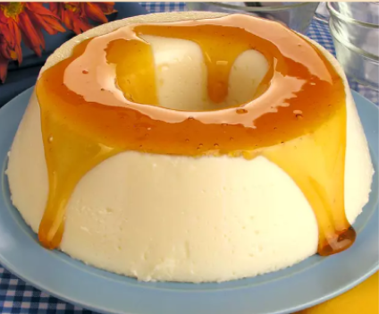

Pudim de leite condensado e maria-mole

O pudim de leite condensado e maria-mole é uma sobremesa leve e cremosa, que combina a doçura do leite condensado com a textura macia da maria-mole. Ele é preparado no liquidificador com leite condensado, leite, ovos e a maria-mole dissolvida, e assado em banho-maria. O pudim tem um sabor doce e suave, e pode ser servido com calda de caramelo, chocolate ou coco ralado. É ideal para almoços de família, festas e lanches, sendo uma opção prática e deliciosa.